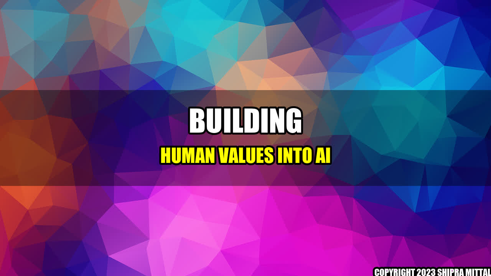

Building Human Values into AI: Balancing Ethics and Innovation

When I was a child, my grandfather used to tell me stories about the time when he used to work with computers. He talked about how these bulky boxes with neon green text transformed the way people worked and communicated. Little did we know that these machines would one day turn into intelligent beings capable of making decisions on their own. As we progress towards building more advanced AI, we need to ask ourselves, "How can we ensure that such intelligent beings adhere to our human values?"
Concrete Examples
One of the best examples of building human ethics into AI is the use of self-driving cars. In order to minimize the risks of accidents, these vehicles are programmed to prioritize human lives over property damage. Another example is the use of chatbots that are designed to communicate respectfully and avoiding derogatory language or inappropriate content.
Steps towards Ethical AI
- Develop clear guidelines: The first step is to establish a set of guidelines that reflects our human values. These guidelines can be used as a framework while designing AI technologies.
- Collaborate with diverse communities: To ensure that these guidelines are inclusive and represent different cultures and beliefs, we must collaborate with diverse communities while designing AI.
- Transparency and Accountability: AI developers should be transparent about the ethical considerations while designing the technologies, and be held accountable for any ethical breaches that may occur.
Conclusion
- Building human values into AI is essential to prevent harmful consequences and ensure that AI adheres to our ethical principles.
- The guidelines for ethical AI should be inclusive and represent diverse cultural beliefs.
- Transparency and accountability are key to ensure the ethical use of AI.
References & Further Readings
Akash Mittal Tech Article
Share on Twitter Share on LinkedIn